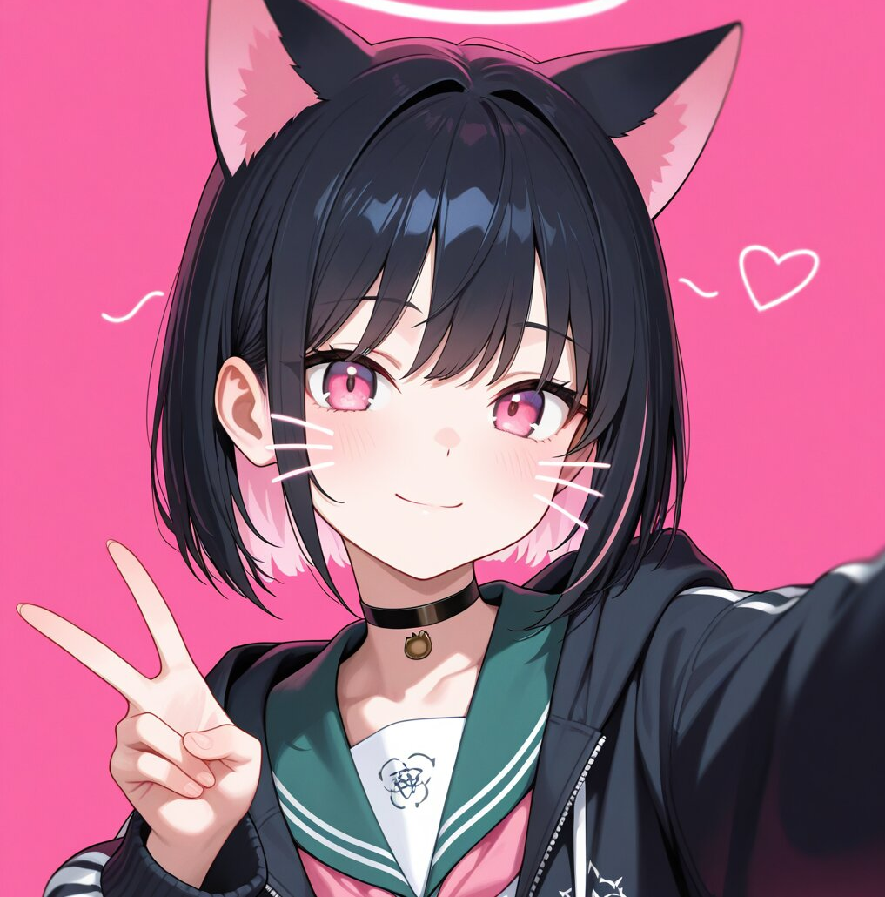

Hirayama Aiiko
✨ LoRa & ILXL Model Trainer ✨
Creating art with Artificial Intelligence. Trainer of style models, characters... checkpoints and more... 🎨🤖
✨ LoRa & ILXL Model Trainer ✨
Creating art with Artificial Intelligence. Trainer of style models, characters... checkpoints and more... 🎨🤖